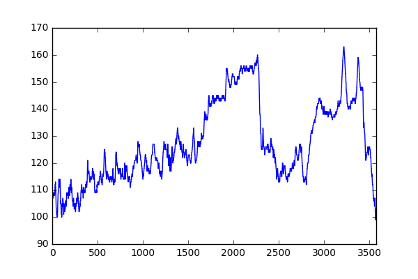
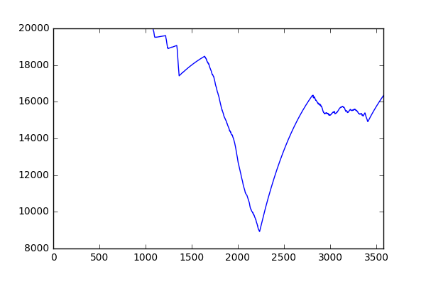
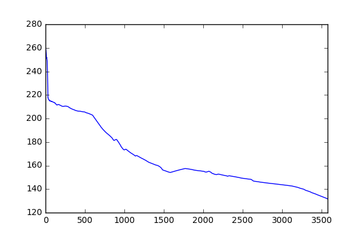

Sweatpy
Warning
Sweatpy is currently undergoing major revisions which will result in deprecations and backwards incompatible changes. We recommend pinning any dependencies with sweat==0.4.0.
Introduction¶
Sweatpy is a Python library that is designed to make workout analysis a breeze. The current state of the project is "very beta": features might be added, removed or changed in backwards incompatible ways. When the time is right a stable version will be released. Get in touch with the contributors or create an issue if you have problems/questions/feature requests/special use cases.
Installation¶
This library can be installed via PyPI:
pip install sweat
Usage¶
The core feature of this library is the WorkoutDataFrame.
This class is a subclass of pandas.DataFrame and offers all the functionality that is available for this class, plus some workout specific functionality.
After installation, the WorkoutDataFrame can be imported this way:
from sweat.models import WorkoutDataFrame
To load some example data from this repository:
import pandas as pd
wdf = WorkoutDataFrame(pd.read_csv('./tests/fixtures/workout_1.csv'))
Basic operations on the data are provided by pandas.Dataframe superclass:
wdf.power.mean()
>> 131.65231973169369
wdf.power.max()
>> 280
wdf.heartrate.plot()

For some workout specific functionality information about the athlete is needed.
This can be set on the WorkoutDataFrame as follows:
from sweat.models import Athlete
wdf.athlete = Athlete(name='Chris Froome', cp=175, w_prime=20000)
When this is done for example the W'balance can be computed, added to the wdf and plotted:
wdf = wdf.assign(w_prime_balance=wdf.compute_w_prime_balance())
wdf.w_prime_balance.plot()

It is also possible to compute and plot the mean max power for this workout:
mean_max_power = wdf.compute_mean_max_power()
# Get the mean max power for 60 seconds
mean_max_power[60]
>> 215.03278688524591
mean_max_power.plot()

Another feature of this library is that you can create custom workout and for example analyze the W'balance of it:
wdf = WorkoutDataFrame(dict(
power=[100]*60 + [200]*120 + [100]*60
))
wdf.athlete = Athlete(cp=175, w_prime=20000)
wdf = wdf.assign(w_prime_balance=wdf.compute_w_prime_balance())
wdf.w_prime_balance_min()
>> 17320.207532891662
There are already more algorithms available on the WorkoutDataFrame such as alternatives for the Skiba W'balance algorithm.
More algorithms will be added later.
This documentation is quite compact at the moment but will be extended with more examples in the near future. Stay tuned!
Contributing¶
See CONTRIBUTING.md.
Contributors¶
License¶
See LICENSE file.